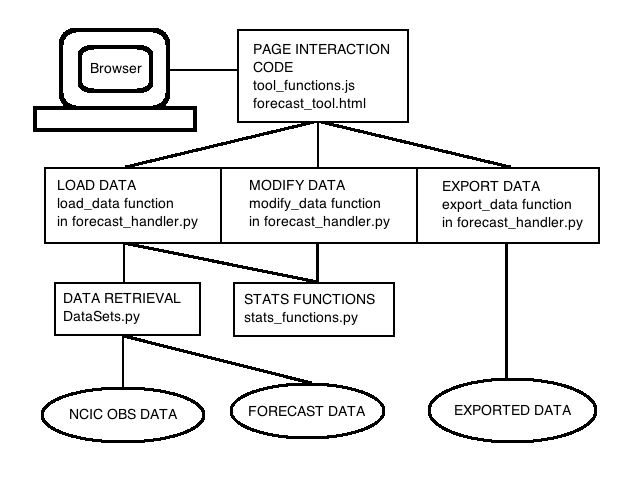

Introduction
This help page is a techinical guide to running and maintaining the forecast PDF tool. The tool is written in Python2.7 so knowledge of the language will help a great deal in fixing or changing how the tool works. Note, the tool relies on data only accessible from within the Met Office, it will not work outside the building.
Set up
There is a very basic set up required to make sure the tool is reading and writing with the correct folders. At the top of the file cgi-bin/forecast_handler.py (found in the SeasonalForecastPDF directory. See below for more details), directly under the imports, there are 3 directories to specify:
- import_directory - This is the only directory that MUST be correct. The tool loads all the initial data from this directory and expects a very specific file format. At time of writing, this folder is:
/home/h02/frgo/TEST/jhirst_plots/new_caboff_plots/plots_N216/ - export_directory - This is the directory where the outputs are saved. This can be any directory. Note, when exporting with the tool, you are told exactly where the output files have beed saved, which will be the directory specified here.
- temp_directory - When building the output files, temporary files are created (and then deleted once not needed). Here you can specify which folder this is done in. A simple option is to set this to be the same as the export_directory.
Running the tool
All the code for the tool is self contained in a folder called SeasonalForecastPDF. This is located here (at the time of writing):
/net/home/h02/sstanley/packages/SeasonalForecastPDF/
To run the Python scripts which fetch the data, the page requires a server. As it happens, Python has a module which turns any computer into a simple server, perfect for these purposes.
To get the server running, follow these steps:
Open up a terminal and move to the tool's directory. This is the above directory unless it has been moved.
cd /net/home/h02/sstanley/packages/SeasonalForecastPDF/
Then run:
python2.7 -m CGIHTTPServer 8000
Note, the final number (8000) is the port number and can be changed to any 4 digit number higher than 1000. It is usual to use 8000 but if a port is already in use try another.
You should get a message something like "Serving HTTP on 0.0.0.0 port 8000 ...". This terminal is now the acting server and must not be closed or stopped whilst running the tool.
You can now access the tool via the browser with an address like this:
http://eldxxx:8000/forecast_tool.html
"eldxxx" must be replaced with the machine number running the server (this is your machine unless you've ssh'd somewhere else), and ":8000" refers to the port number so if you chose another (in step 2), change this to match.
The code
Here we take a closer look at the code running all this. The aim is to provide a clear understanding of what each bit does and how it all fits together giving you a good idea of where to look if something goes wrong.
Structure
This diagram represents the overall code structure.
Let's take a general look at what each of the files do. File paths are given from the SeasonalForecastPDF directory.
- forecast_tool.html (along with custom_style.css) - These do the page formatting. Uses Bootstrap.
- js/tool_functions.js - This is written using jQuery. It has a 2 jobs:
- Makes the page dynamic, i.e. handles button pressing, window pop ups and animations.
- Sends relevant data (e.g. forecast issue date) from the page, to the Python script forecast_handler.py. It also recieves the returned data and plots it (using Flot).
- cgi-bin/forecast_handler.py - This is where most of the work is done. It can do one of three jobs: load, modify or export data. When tool_functions.js sends data from the tool (via JSON), it specifies which of these jobs it needs to do. We look closer at this module in the Python section.
- cgi-bin/DataSets.py - This module contains two classes:
- IssuedForecastData - for retrieving UK forecast data.
- NCICTextData - for retrieving NCIC observations. This is used by the IssuedForecastData class to calculate climatologies.
- cgi-bin/stats_functions.py - This just contains pre-written statistical functions such as PDF probability calculaters. forecast_handler.py imports all the functions from this it needs.
JavaScript
Python
Debugging
There are two likely outcomes if an error occurs:
- The "importing" message box won't close - This, ironically, is likely to be an import error in the cgi-bin/forecast_handler.py script. Assuming this is the case, it means the script can see one of the imports in its $PYTHONPATH. See below to help solve this.
- A (potentially strange) message appeared in the text area (top right) of the tool - This is the error message returned from the script. Hopefully it says something sensible like "There is no data for the selected period", but if it is a bit more criptic, see below to help solve this.
The best first step to debug a problem is to run the cgi-bin/forecast_handler.py script manually (not using the tool), this way you get the full error traceback. Here are the steps to run the script manually:
- Open the file cgi-bin/forecast_handler.py
- At the bottom of the file there is an "if __name__ == '__main__':" statement. For now just work within this statement.
- To run the script manually you must comment out the code above "# Example JSONs for testing and debugging." and un-comment one of the example JSONs. Which, depends on where the error occured, during importing, modifying or exporting? If needed, the JSONs can be edited to replicate information the tool sent when the error occured.